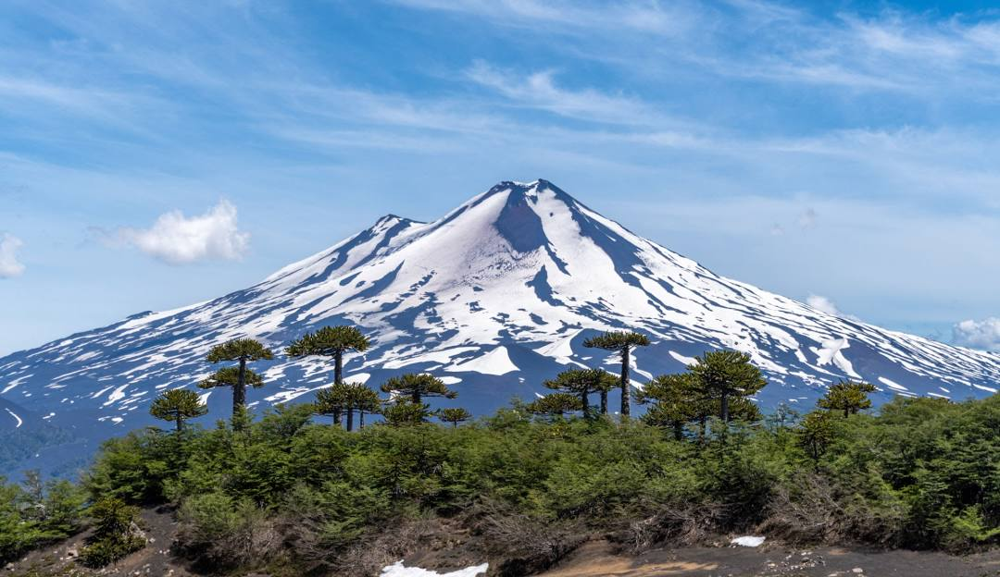

Trekking
Alta dificultad
Araucanía Andina
Circuito Volcán Llaima
Araucanía Andina · Parque Nacional Conguillío
Un recorrido de alta montaña que rodea el volcán Llaima, uno de los más activos de Sudamérica. Atraviesa paisajes de lava solidificada, bosques de araucarias y miradores únicos con vistas al Parque Nacional Conguillío.
- Duración
- 2 días
- Distancia
- 28 km
- Desnivel
- +1 400 m
- Punto de inicio
- Sector Captrén
- Temporada
- Dic – Mar
- Punto de llegada
- Guardería Truful